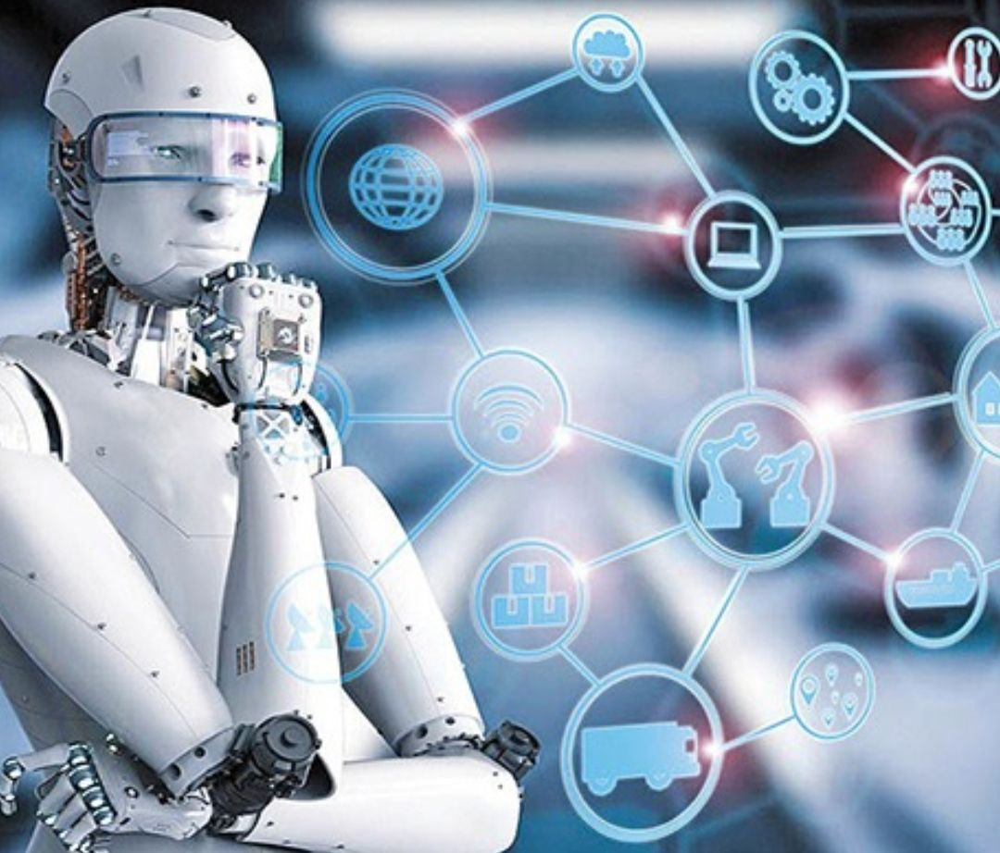
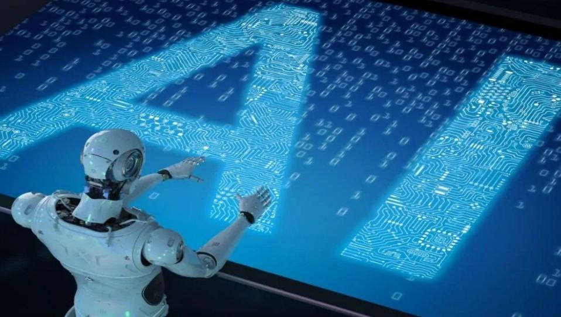

معرفی تکنولوژی
پیشرفت تکنولوژی به دست انسان از مدتها پیش مدام در حال توسعه بوده است. در این متن قصد داریم برخی از جدیدترین تکنولوژیها را برای شما معرفی کنیم. آشنایی با تکنولوژیهای امروزی نه تنها میتواند ما را با اتفاقاتِ روز همگام کند، بلکه ممکن است تصمیم بگیریم که کسب و کار خود یا سبک زندگی خود را نیز دچار تحول کنیم.
تکنولوژی ارمغانی است که دنیای ما را گستردهتر، راحتتر و هیجانانگیزتر میکند. هر آنچه که برای ما یک خیال است، ممکن است روزی به خاطر پیشرفتهای علمی و ظهور تکنولوژیهای جدید، به واقعیت بپیوندد. شما کدام خیال را دور از دسترس و آن را غیرممکن میدانید؟
شاید غولِ چراغ جادو تواناییهای علم در خلقِ تکنولوژیهای نو است. هر چند نه به آن سرعت اجی مجی لاترجی!
بهتر است بدانید آگاهی از تکنولوژیهایِ جدید میتواند والدین را در همراهی با فرزندان در این عصر رو به رشد کمک کند. این را گفتیم که بدانیم برای چه باید مطالعه کنیم و اطلاعاتی در این زمینه کسب کنیم. هدف شما از خواندن این متن چیست؟ شاید نکتهای برای شما در آن نهفته است. پس اگر شما هم مثل ما شیفته تکنولوژی و خیالپردازی هستید، با ما همراه باشید. برویم سراغ معرفی چند تکنولوژی جدید!

تکنولوژی چیست؟
تکنولوژیلغت تکنولوژی Technology به معنی یک عملکرد سیستماتیک است. به همین خاطر هر وسیلهای که به دست انسان ساخته میشود، تکنولوژی است. برای مثال: کشاورزی، شکار و هر چیزی که با بهره از علم به یک کاربردِ روزمره تبدیل میشود، تکنولوژی است. آمیزهای از هنر و دانش. معادل فارسی تکنولوژی، فناوری است و به معنی دارندگی یک چیز است؛ چه چیزی؟ فن! خب تا همین حد از نظر لغوی به ما میگوید هر چیزی که در طولِ عصرها ساختیم، یا به دست گرفتیم و از آن استفاده کردیم، تکنولوژی است.
نیاز انسان ها به تکنولوژی
انسان ها به صورت روزمره با تکنولوژی سر و کار دارند و تکنولوژی به سرعت در حال پیشرفت است"
بله درست گفتم ...به سرعت در حال پیشرفت است از جمله آنها میتوان به گوشی موبایل یا کامپیوتر خانه تان یا حتی لپ تاپ محل کارتون و یا ماشین زیر پایتان بگم
انسان خواه ناخواه با تکنولوژی سرو کله میزند
شرکت های توسعه دهنده تکنولوژی به صورت مستمر در حال رقابت با هم هستند تا تکنولوژی های بروز و جدید تری ارایه بدن و این امری اجتناب نا پذیر است
جدید ترین نوع تکنولوژی چیست؟
ما میدانیم که در حال حاضر موضوع هوش مصنوعی در دنیای کنونی یک تکنولوژی در حال توصعه است و این موضوع میتواند
در آینده دنیا را دست خوش تغیرات بزرگی کند
با امکاناتی که هوش مصنوعی در اختیار ما قرار میده میتوان خیلی از کار ها را کاملا به صورت دقیق ،زیبا و البطه خیلی آسان تر انجام داد
هرچند که هوش مصنوعی یک دانش نوپا است اما در مواردی مانند چت کردن،ساخت تصاویر،درست کردن ویدیو و...در حال توصعه است

>برترین تکنولوژی های لپتاپ وگوشی و کامپیوتر کدامند؟
میتوان گفت که امروزه کمتر کسی هست که با گوشی و کامپیوتر ها و لپتاپ ها سر و کار نداشته باشد پس میتوان گفت که آنها برای عموم خیلی بیشتر در دسترس هستند
شرکت های مختلف برای توسعه هرچه بیشتر محصولات خود با یکدیگر در حال رقابت هستند دوربین های قوی تر،پردازنده های بهتر،محسط کاربری بهتر و...این احساس نیاز انسان ها را تحریک میکنند تا هر چی بیشتر به سمت تکنولوپزی های جدید تر بروند
و شما میتوانید پرچم دار های گوشی ،لپتاپ و کامپیوتر را در لینک های زیر بیشتر مورد مطالعه و مقایسه قرار بدهید